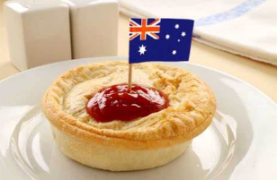

El pastel de carne es el plato más famoso de la comida típica de Australia. Con el paso del tiempo se ha ganado el título de plato nacional. Su ingrediente principal es la carne picada, la cual se introduce en una base elaborada con harina, manteca y sal.
